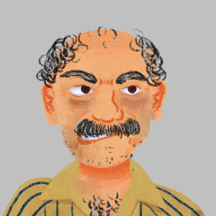
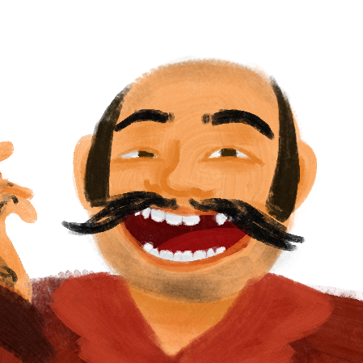
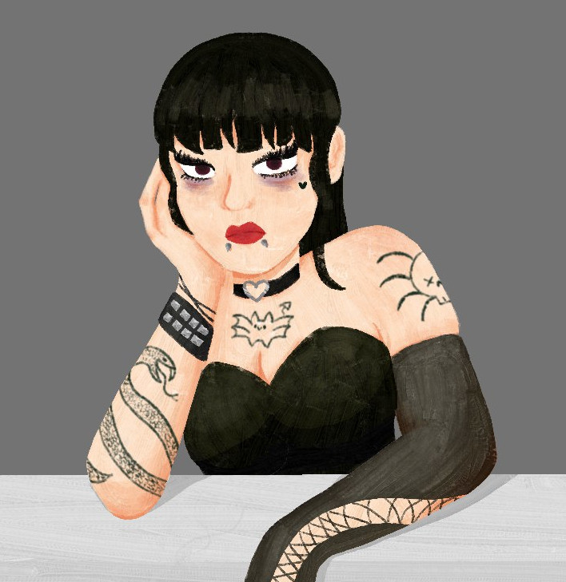
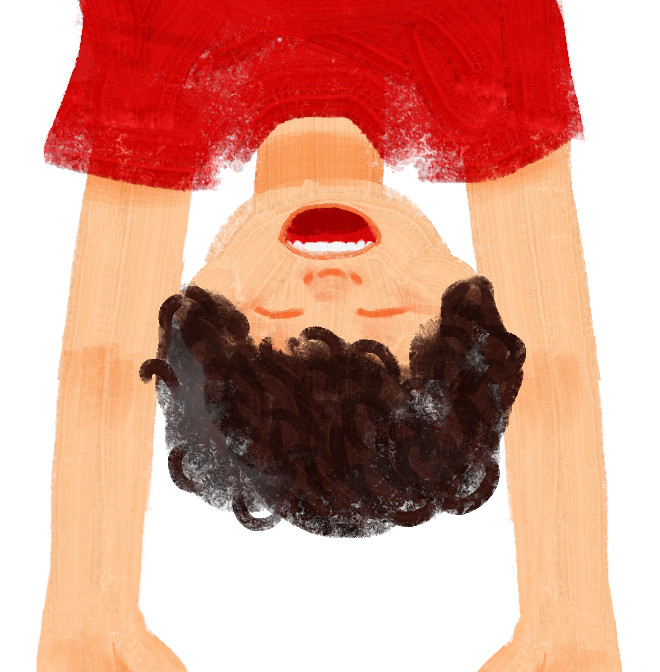
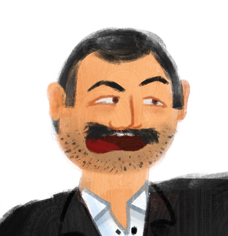

Sistom
Nome de usuário
Pacientes
Pesquisar
Filtrar
Adicionar
Estatísticas

Zézo

Jorge

Pietra
Atrasado em 2 meses

Enzo

Betão
Atrasado em 3 semanas
Marinho
 Nome de usuário
Nome de usuário
Nome de usuário
Nome de usuário